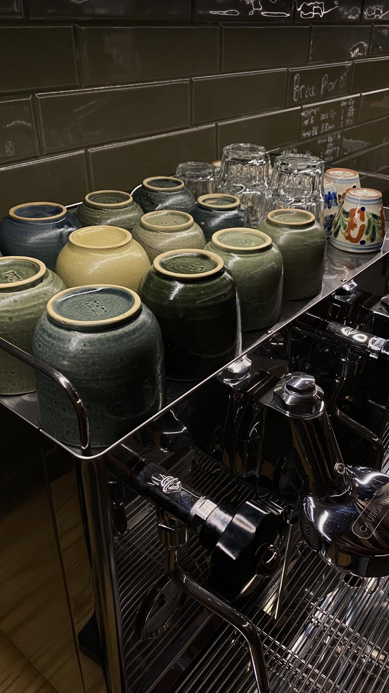
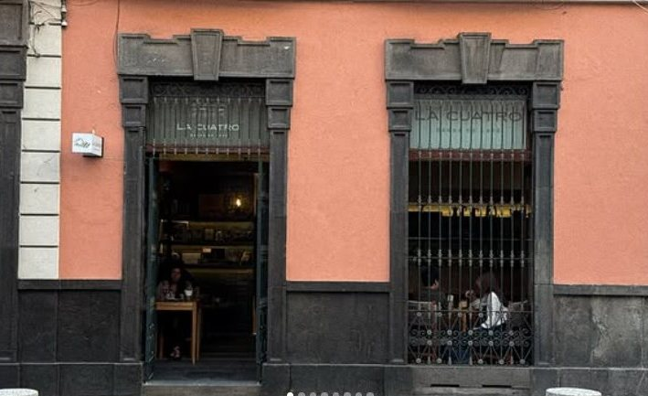
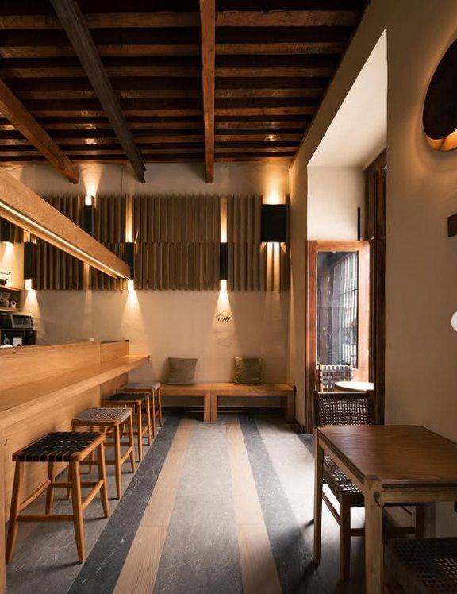
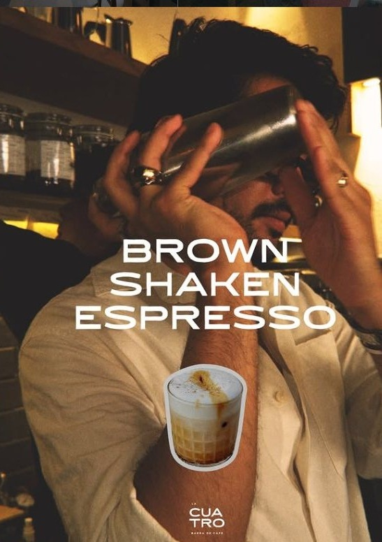
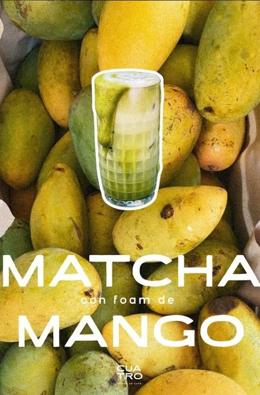
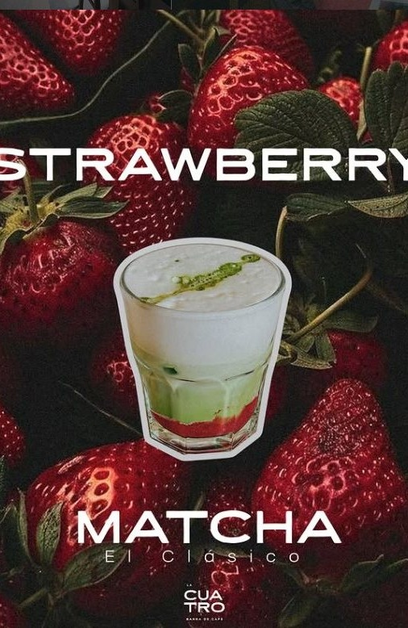
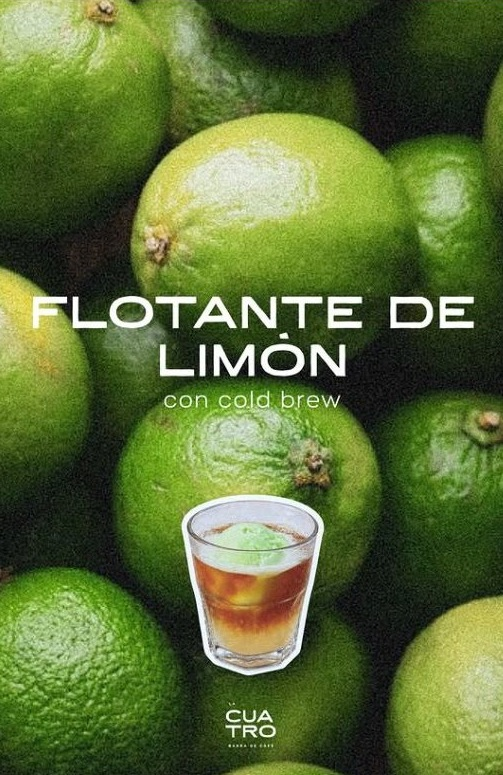
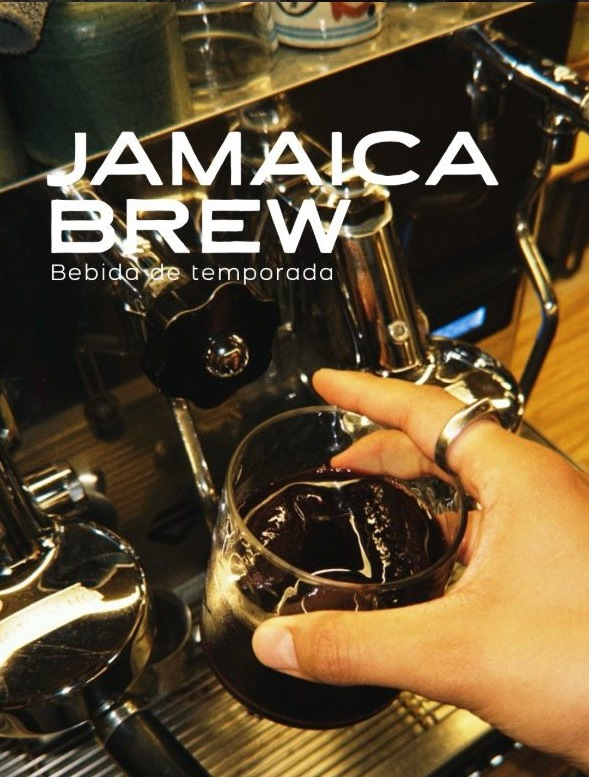
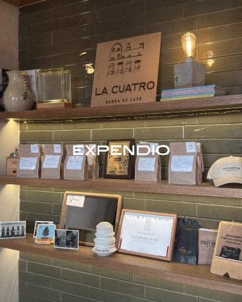
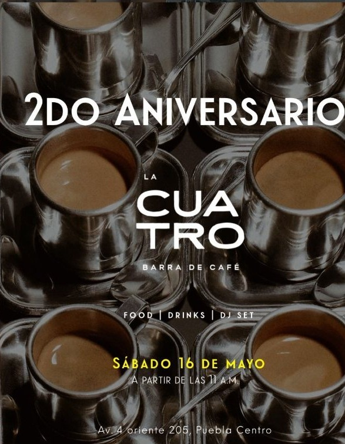

Origen con nombre
Microlotes de Huitzilán y Totutla con el nombre del productor en cada bolsa.
Nos vemos en
Granos especiales del estado de Puebla, servidos en una casa colonial a dos cuadras del Zócalo.

El nombre viene de una promesa familiar: «nos vemos en la Cuatro». Hoy esa promesa es una casa colonial en la Avenida 4 Oriente donde el café reúne a la gente, como lo hacía la casa del abuelo.
Desde 2023, cada taza es un homenaje al café poblano y a quienes lo cultivan.
«El café fue primero. Lo demás llegó solo.»


Microlotes de Huitzilán y Totutla con el nombre del productor en cada bolsa.
Una casa colonial de maderas nobles y cerámica oliva, refugio para la charla o el trabajo.
Panaderos, floristas y baristas invitados: La Cuatro se construye en colectivo.
Bebidas frescas con fruta, matcha, cold brew y espresso. Ya disponibles en barra.

Espresso agitado con hielo y azúcar morena

Matcha ceremonial con espuma de fruta de temporada

El clásico: fresa natural, leche y matcha en capas

Nieve de limón flotando sobre cold brew

Jamaica + Cold Brew
La acidez floral de la jamaica sobre el cuerpo dulce de nuestro cold brew poblano. Para tardes de calor.
Ver el menúMicrolotes poblanos tostados para filtrados y espresso, listos para llevar a casa.

Huitzilán de Serdán
Huitzilán de Serdán
Totutla
Huitzilán de Serdán
Presentaciones de ¼ kg a 1 kg, molido a petición en barra
Cada método revela algo distinto del mismo grano. Los baristas te acompañan a encontrar tu taza.
Herrería colonial, cerámica oliva y luz de filamento.

Cada aniversario es un día completo de café, baristas invitados y música: nuestra Coffee House Party.
Celebramos junto a los proyectos locales que hacen posible este camino:
Comentarios reales de nuestra comunidad en Instagram.
«Yo quiero flotante de limón!!»
@maria_hdes
«Por los cafés y el chismecito con los amigos.»
@mario_lv
«Una delicia 🔥🔥»
@aguilera.leal
«Se me antojó un café!»
@itsmaxge
La casa también suena
Llévate el ambiente de la barra a donde vayas:
¿No encuentras tu respuesta? Escríbenos por Instagram y con gusto te ayudamos.
¿Un pedido de café en grano, una colaboración o un evento privado? Escríbenos y te respondemos a la brevedad.
También puedes mandarnos mensaje directo en Instagram, donde respondemos más rápido.